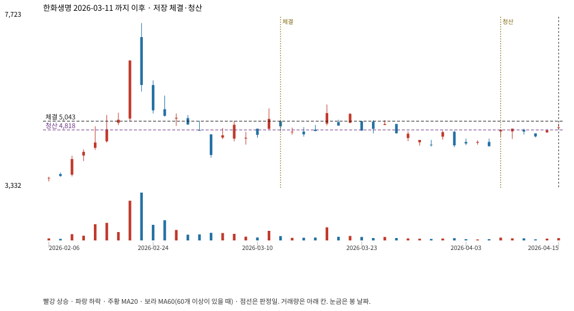

계좌를 다시 돌리지 않았다. 아래는 저장된 주문·체결·청산·비용·손익이다.

{
"case_id": "83230ae58633625e",
"status": "closed",
"trade": {
"symbol": "088350.KS",
"signal_date": "2026-03-11",
"quantity": 23,
"entry": 5100,
"stop": 3972,
"target": 7560,
"planned_risk": 26198.288321999986,
"reserved_cash": 117417.29999999999,
"fill": {
"date": "2026-03-12",
"price": 5042.5199999999995,
"fee": 115.97796
},
"exit": {
"date": "2026-04-08",
"price": 4817.59,
"reason": "time",
"net_pnl": -5400.172529999967,
"ambiguous_bar": false
}
},
"cost": "research fee 10bp each side, slippage 5bp; amounts below are the stored ledger, not a new run",
"chart": "c\/83230ae58633625e.svg"
}